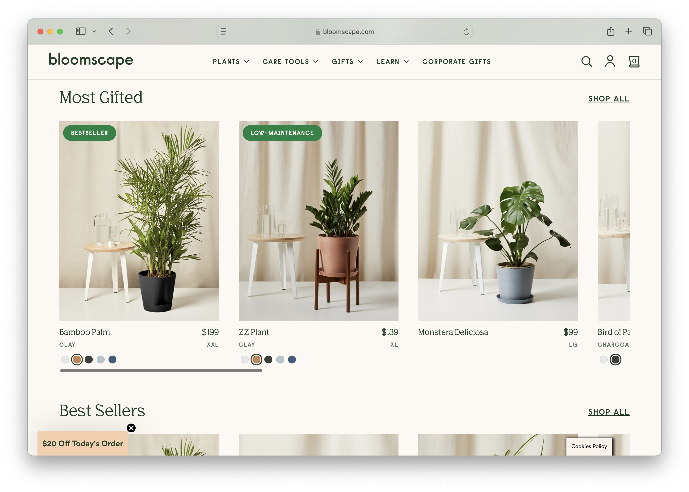
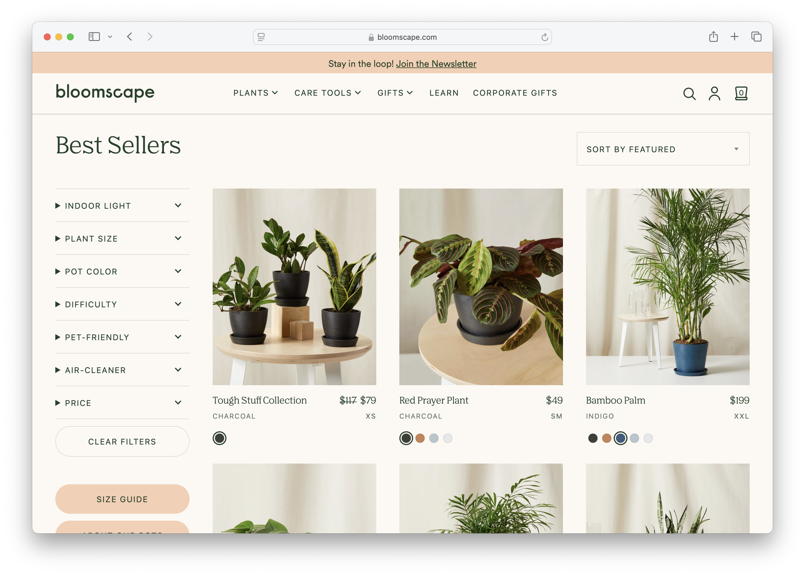
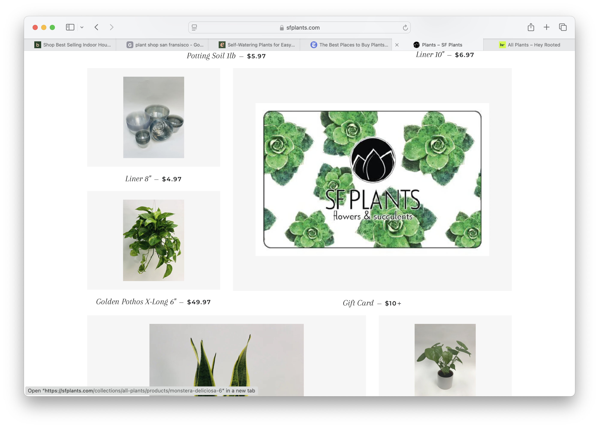
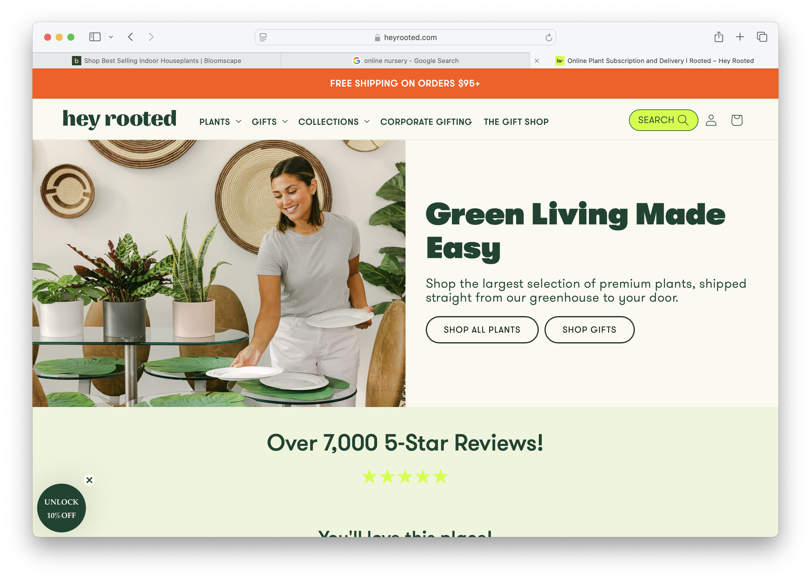
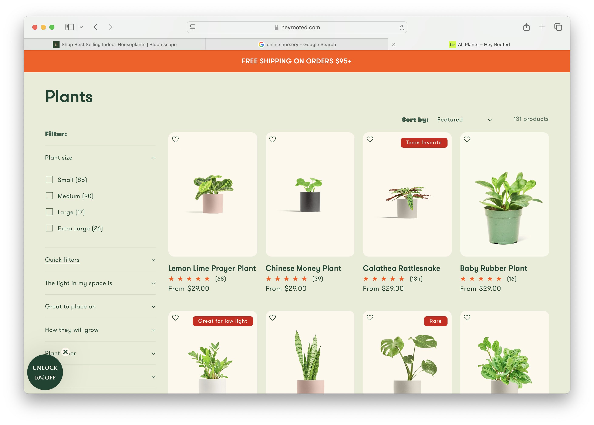

Final project proposal
Introduction
Homegrown SLO
A plant shop located in downtown San Luis Obispo, California, offering indoor plants, coastal-inspired greenery, and beginner-friendly plant care resources.
Target audience
The primary audience includes students decorating dorms or apartments, young professionals upgrading their living spaces, and local residents looking for gifts or home décor. Users visit the website to browse available plants, compare prices, learn basic care instructions, and find store hours and location details. Because many customers are first-time plant owners, their main goal is to find low-maintenance plants and feel confident about caring for them.
Comparative analysis
Website 1


Website 2


Website 3


Website content
Home
Modern houseplants for Cal Poly students, cozy apartments, and sunny SLO homes. At Homegrown SLO, we bring fresh, approachable greenery to San Luis Obispo homes, apartments, and dorm rooms. Whether you’re a first-time plant owner or expanding your indoor jungle, we make plant care simple and stress-free. Why Homegrown SLO? We believe plants should feel accessible, not intimidating. That’s why every plant we sell includes simple care instructions and a recommended difficulty level. From low-maintenance dorm plants to statement pieces for bright living rooms, we help you grow with confidence.
[Picture of a houseplant on a windowsill.]
About us
Homegrown SLO was created with the San Luis Obispo community in mind. Living on the Central Coast means sunshine, outdoor living, and a relaxed pace. We believe your indoor spaces should reflect that same natural energy. Our mission is to make plant ownership easy and enjoyable for students, young professionals, and local residents. We specialize in beginner-friendly plants and offer guidance so every customer leaves feeling prepared and confident.
[Image of central coast greenery]
Our Plants
- Monstera Deliciosa – $45 – A bold tropical plant with large split leaves that makes a dramatic statement in bright, indirect light.
- Snake Plant – $28 – Extremely low-maintenance and tolerant of low light, making it perfect for dorm rooms and beginners.
- ZZ Plant – $32 – A resilient plant with glossy, dark green leaves that thrives in low light and requires minimal watering.
- Pothos – $20 – A versatile trailing plant with heart-shaped leaves that adapts to various lighting conditions.
- Spider Plant – $25 – Known for its arching stems and small white flowers, it's a great choice for hanging planters.
- Peace Lily – $35 – A beautiful flowering plant that thrives in humid environments and helps purify the air.
- Fiddle Leaf Fig – $50 – A statement plant with large, glossy leaves that adds elegance to any room.
- Areca Palm – $38 – A classic tropical plant with feathery fronds that thrives in bright, indirect light.
- Rubber Plant – $30 – A low-maintenance plant with glossy, dark green leaves that adds a modern touch to any space.
- Dracaena Marginata – $40 – A graceful plant with narrow, striped leaves that adapts well to indoor conditions.
Location
742 Higuera Street - San Luis Obispo, CA 93401
[Image of downtown SLO]